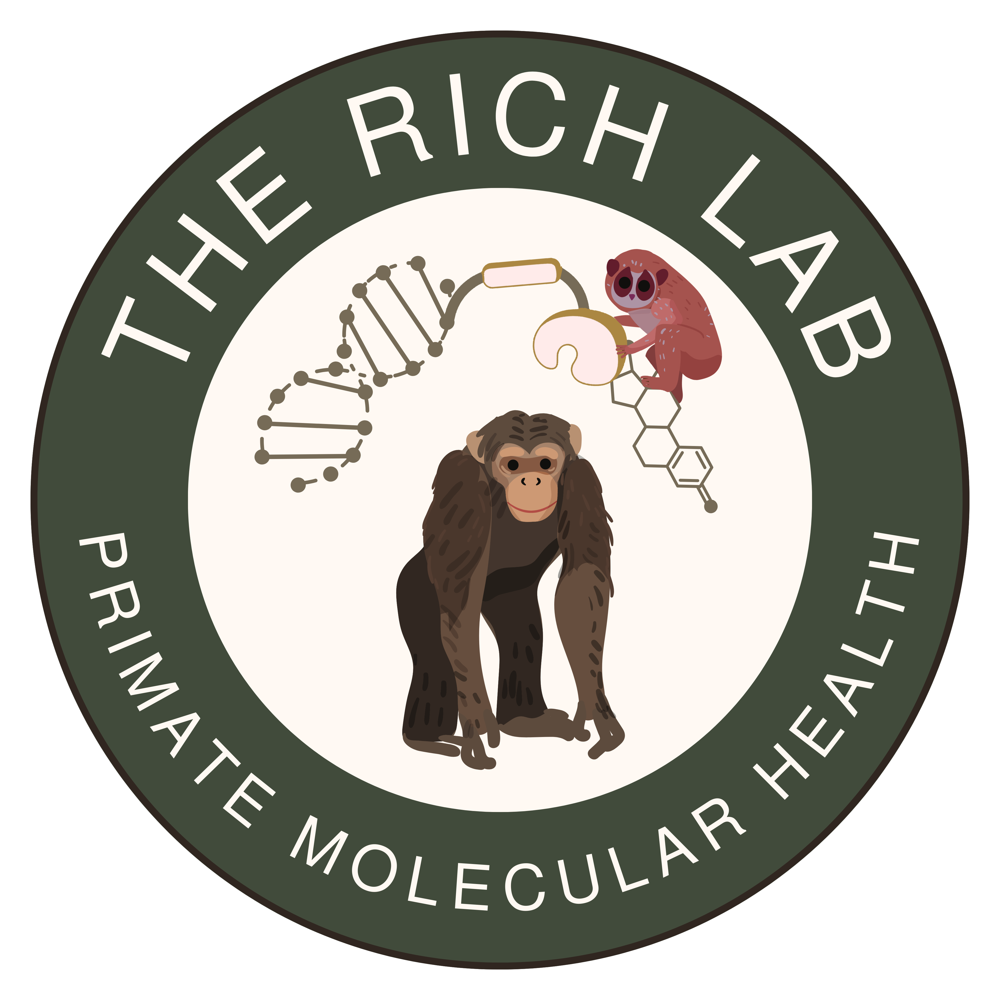

Dr. Alicia Rich she/her
- Assistant Professor of Biology
- Environmental Science Program

Molecular Ecologist, Primatologist
If you Need my Help

aliciarich@unomaha.edu
Please do not try to contact me via Canvas Messages
- Before you send an email, make sure you know exactly what a productive response would look like
- A few sentences?
- A yes or no?
- A specific file?
- A time to meet?
If you Need my Help
aliciarich@unomaha.edu
Please do not try to contact me via Canvas Messages
- A few sentences, A yes or no, A specific file, A time to meet
- All good reasons to send an email
- More than a few sentences will require a meeting
- For venting or emotional/personal support, make use of Counseling and Psychological Services.
If you Need my Help
- Expect 24-48 hours for a response to emails
- Not in the evenings or on weekends
- I don’t schedule meetings at these times either
If you do not hear back from me after 3 days, then please remind me with another email or in class/office hours.
Values
Authenticity — Curiosity — Responsibility
Speak up if you are confused or struggling.
Attempt to manipulate or mislead your instructors or classmates.
Be honest with yourself about your needs & capabilities.
Hide or deny your biases or areas for growth.
Use tools like AI and collaboration with integrity.
Present direct results from AI tools like ChatGPT as your own work.
Values
Authenticity — Curiosity — Responsibility
Use the readings and assignments as a guide.
Let the syllabus limit your investigation.
Ask thoughtful questions of yourself, your instructor, and your colleagues.
Expect me to fill your brain with facts for you to recall.
Actively seek insights from your classmates.
Dominate discussions so that only your voice occupies the space.
Maintain awareness and openness to shifting your perspectives or drawing new conclusions.
Assume your perspectives and views are permanent or fully-informed
Values
Authenticity — Curiosity — Responsibility
Take initiative when you see an opportunity to encourage thoughtful discourse.
Wait for your instructor to lead every discussion.
Take full personal responsibility for mistakes or missed opportunities.
Deflect blame or redirect responsibilities on your instructor or your classmates.
Cultivate a professional and respectful attitude that match for all your instructors
Let your implicit bias cloud your expectations of or attitude toward your instructor
Bring your barriers to my attention so I can help you navigate them.
Assume only you are navigating barriers or that barriers are insurmountable with cooperation.
Expectations
Organize topics & resources
Record, organize, and manage all necessary information*
Distill & clarify major themes
Study assigned content & investigate further
Guide discussions & answer questions
Engage with your classmates during scheduled meetings
Ensure classroom equity & accessibility
Manage your time, priorities, and needs
Assess your mastery of the learning outcomes
Set/adjust your goals and monitor your progress
**This means take your own notes*
Attendance
- Not a hybrid or asynchronous course
- I only present content during class time.
- I only offer one opportunity for participation
- I build in flexibility to allow everyone to miss occasionally without penalty
- I do not micromanage attendance
- Excuses are not necessary
- Collaborate with classmates to get notes or ask what you missed
Instructor cringe
- “What did I miss?”
- “Will this be on the test?”
- “Do we need to take notes on this?”
- “When can you set aside time to help me catch up on all the classes I missed this semester?”
Accessibility & Inclusion
“Educational materials and technologies are “accessible” to people with disabilities if they are able to “acquire the same information, engage in the same interactions, and enjoy the same services” as people who do not have disabilities.” –Joint Letter US Department of Justice and US Department of Education
Accessibility Services Center (ASC)
Student Learning Outcomes
Quizzes
- Preparation check-ins at the start of class
- Use your phone, tablet, or laptop
- Open book/note
- But no AI/chatBots allowed
No makeup options, but the lowest scores will be dropped (15% of total number of quizzes).
In-Class Work
- Submitted at the end of class for completion credit
- same value as a quiz (5 points)
- Notice may or may not be given on the Course Schedule
No makeup options, but the lowest scores will be dropped (15% of total number of quizzes).
Guided Case Conversations
In this recurring assignment, students will work in small groups to lead a structured, whole-class discussion focused on a real public health issue caused or influenced by the environment.
- Species recovery or management programs
- Habitat protection, restoration, or connectivity initiatives
- Reintroduction, translocation, or captive breeding programs
- Zoo, NGO, or government conservation initiatives
- Conservation education or community-based projects
- Extinction
- Habitat Loss, Fragmentation, and Degradation
- Overexploitation
- Invasive Alien Species
- Climate Change
- Species-Level Approaches
- Community & Ecosystem Approaches
- Landscape-Scale Approaches
Exams
- 50 points each
- In-person, synchronous, and written
- Multiple choice, True/False, Short Essay
Open book/open-note, but hard-copy only